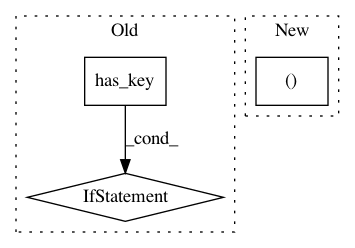

63ef8bfa3b63090437bd27bf1e04db7ae1eae3cf,nilmtk/stats/totalenergy.py,,get_total_energy,#,39
Before Change
// Preference is to calculate energy from
// native Energy data rather than Power data
// so don"t overwrite with Power data.
if not energy.has_key(ac_type):
energy[ac_type] = _energy_for_power_series(
series, max_sample_period)
data_source_rank[ac_type] = 3 // least favourite
elif physical_quantity == "cumulative energy":
energy[ac_type] = series.iloc[-1] - series.iloc[0]
data_source_rank[ac_type] = 1 // favourite
elif (physical_quantity == "energy" and
After Change
if col_ac_type == ac_type]
for pq in PHYSICAL_QUANTITY_PREFS:
if pq in physical_quantities:
selected_columns.append((pq, ac_type))
break
energy = {}
In pattern: SUPERPATTERN
Frequency: 3
Non-data size: 3
Instances
Project Name: nilmtk/nilmtk
Commit Name: 63ef8bfa3b63090437bd27bf1e04db7ae1eae3cf
Time: 2014-11-27
Author: jack-list@xlk.org.uk
File Name: nilmtk/stats/totalenergy.py
Class Name:
Method Name: get_total_energy
Project Name: nilmtk/nilmtk
Commit Name: 68d56b30e50858751d9248332d20be844031fff0
Time: 2014-12-12
Author: jack-list@xlk.org.uk
File Name: nilmtk/metergroup.py
Class Name: MeterGroup
Method Name: dataframe_of_meters
Project Name: nilmtk/nilmtk
Commit Name: 68d56b30e50858751d9248332d20be844031fff0
Time: 2014-12-12
Author: jack-list@xlk.org.uk
File Name: nilmtk/metergroup.py
Class Name: MeterGroup
Method Name: load